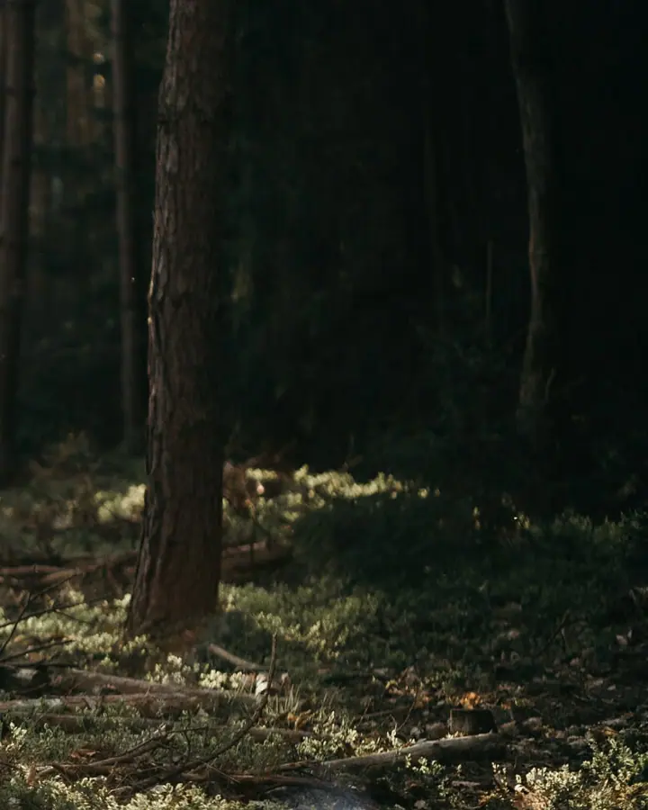
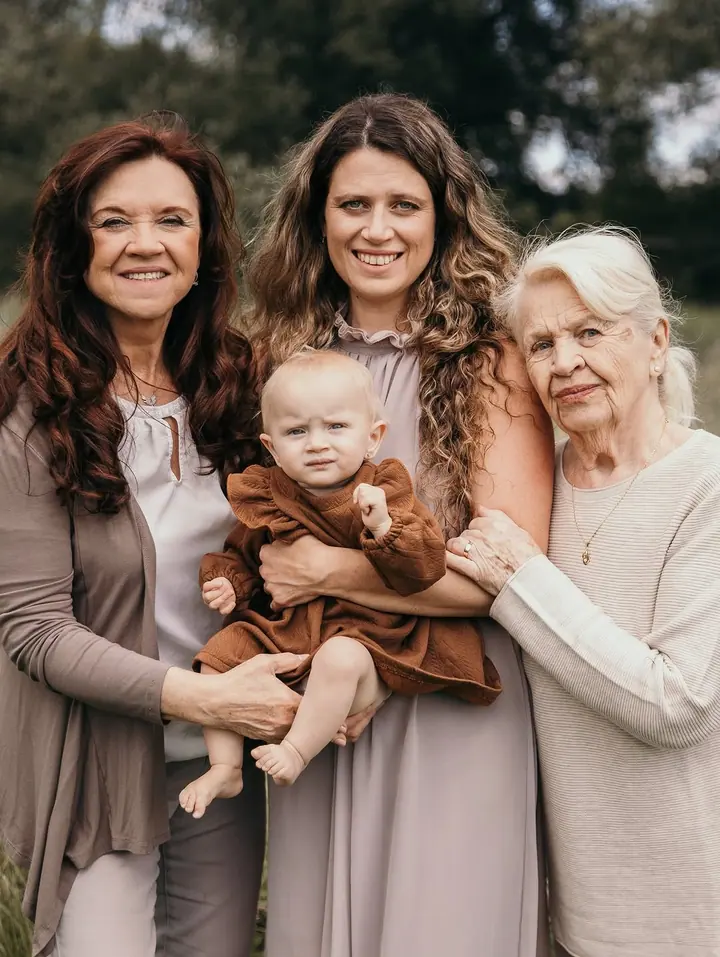

Svatební focení
Nenápadně vás provedu celým dnem a zachytím vše podstatné i to, co se děje mezi řádky. Balíčky od 3,5 hodiny až po celý den, s Betty i jako foto a video.

Jmenuji se Tereza, fotím pod značkou TesS a jsem máma dvou malých parťáků. Fotím svatby, rodiny i páry, nejraději v zlaté hodince před západem slunce. Nemusíte umět pózo…
Rezervovat termínJsem fotografka a také máma dvou malých parťáků, kteří mi každý den připomínají, jak rychle čas utíká. Právě oni mě naučili vnímat hodnotu okamžiků, těch obyčejných, tichých i těch plných chaosu a smíchu.


Fotím všechno, co má emoci: svatby, rodiny, těhotenské focení, páry i portréty. Nesnažím se tvořit stejné fotografie, hledám originalitu v kompozici, ve světle a hlavně ve vás. Proto je i každá úprava jiná, přirozená a bez přehnaných retuší.
Když je potřeba, jsem klidná, a když je potřeba, jsem bláznivá. Při focení vás přirozeně vedu, abyste se cítili jistě. Můj ateliér najdete ve Velkých Popovicích v kavárně Andělka, kde si dáte dobré kafe a děti si zatím pohrají v herničce.
Co fotím
Nenápadně vás provedu celým dnem a zachytím vše podstatné i to, co se děje mezi řádky. Balíčky od 3,5 hodiny až po celý den, s Betty i jako foto a video.
Rodinné focení je o radosti, pohybu, smíchu a přirozenosti. Nečekám na dokonalý moment, vytváříme ho společně.
Něžné a přirozené snímky z čekání na miminko i z jeho prvních dnů. Těhotenské ideálně mezi 28. a 34. týdnem, novorozenecké do 6. týdne.
Párové focení je o dotecích, pohledech a přirozené blízkosti. Společně vytvoříme atmosféru, ve které se budete cítit uvolněně.
Fotografie jsou ilustrační
Postup
Ideálně se ozvěte alespoň 3 až 4 týdny předem, volné termíny průběžně aktualizuji na Instagramu. U svatby termín závazně rezervujete zálohou 1 000 Kč.
Poradím s oblečením, nejlépe v zemitých barvách a bez potisku. Před svatbou se můžeme poznat při předsvatebním focení a společně sepsat harmonogram dne.
Fotíme venku, nejraději v zlaté hodince, nebo v ateliéru ve Velkých Popovicích. Přirozeně vás povedu, bez stresu a bez tlaku.
Výběrovou galerii posílám do 3 dnů od focení, hotové fotografie do 7 až 45 dnů. Svatby dodávám podle balíčku za 3 až 8 týdnů.
Otázky
Balíček na 3,5 hodiny vychází na 7 900 Kč, 7 hodin na 13 900 Kč a celý den (10 hodin) na 18 900 Kč. Foto i video společně s Betty stojí od 30 000 do 39 000 Kč podle balíčku. Doprava je 8 Kč/km.
Rodinné i párové focení stojí 2 000 až 3 500 Kč a dostanete až 40 upravených fotografií v elektronické podobě. Těhotenské a novorozenecké focení dohromady vychází na 4 500 až 5 200 Kč.
Hlavně do pohodlného oblečení, které vás vystihuje, ideálně v zemitých barvách a bez potisku. Když si nevíte rady, pošlete mi fotky oblečení a společně něco vybereme.
Na adrese Masarykova 38 ve Velkých Popovicích, v kavárně Andělka. V ateliéru si můžete půjčit šaty pro dámy, pány i děti a v základním balíčku máte i vizáž.